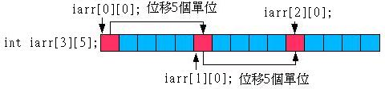

int
iarr[5][10];
上面這個宣告會配置5*10 = 50個整數的記憶體空間給陣列來使用，二維陣列使用兩個索引值來指定存取陣列，這兩個索引值都是由0開始，下面這個程式簡單的示範二維陣列的存取：
#include <iostream>
using namespace std;
int main() {
const int row = 5;
const int column = 10;
int iarr[row][column];
for(int i = 0; i < row; i++)
for(int j = 0; j < column; j++)
iarr[i][j] = (i+1) * (j+1);
for(int i = 0; i < row; i++) {
for(int j = 0; j < column; j++)
cout << iarr[i][j] << "\t";
cout << endl;
}
return 0;
}
執行結果：
| 1
2
3
4
5
6
7
8
9
10 2 4 6 8 10 12 14 16 18 20 3 6 9 12 15 18 21 24 27 30 4 8 12 16 20 24 28 32 36 40 5 10 15 20 25 30 35 40 45 50 |
在上面這個程式中，您宣告了5列（Row）10行（Column）的陣列，第一個[ ]是用來指定存取哪一列，第二個[ ]是用來指定存取哪一行，所以當我們使用iarr[i][j]時，表示要存取 i 列 j 行的元素。
您也可以在宣告二維陣列的同時指定二維陣列的值，例如：
int
iarr[2][3] = {{1,
2, 3},
{4, 5, 6}};
{4, 5, 6}};
從上面這個程式來看，就可以清楚的看出二維陣列的索引方式，您宣告了2列3行的陣列，可以使用{ }與適當的斷行協助我們指定陣列初值，事實上如果您清楚二維陣列的記憶體配置方式，您會理解到{ }其實是可以不用的，例如：
int
iarr[2][3] = {1, 2,
3,
4, 5, 6};
4, 5, 6};
何謂二維陣列於記憶體中的配置方式？其實陣列存取時的行與列是我們為了理解陣列元素的指定存取而想像出來的，索引值正確的意義，是指相對於陣列第一個元素 的位移量，例如在一維陣列中的陣列配置與索引意義如下圖所示：

對int整數陣列來說，每一位移量是4個位元組，而指定存取iarr[4]，相當於指定存取相對於iarr[0]四個位移量的記憶體空間。
即使是二維空間，其在記憶體中也是線性配置的，例如：

在上面的例子中，二維陣列將得到的記憶體分為兩個區塊，我們宣告陣列iarr[2[4]，表示iarr[0][0]與iarr[1][0]相對位移量為 4，當我們指定存取iarr[1][3]時，表示存取的位置是相對於iarr[1][0]位移3個單位。
請想想看，如果宣告iarr[3][5]的話，記憶體位置的指定是如何呢？在這個陣列中5的意義是iarr[0][0]、iarr[1][0]與iarr [2][0]的位置各相對5個位移量，如下圖所示：

其實瞭解二維陣列在記憶體中的配置關係在現階段是不必要的，在固定長度陣列的時候，還是使用列、行的輔助來指定會比較方便，然而瞭解二維陣列的線性配置關 係，在指標存取時就很重要了，因為我們必須瞭解這個線性關係，以指定正確的位置來存取記憶體。
C++也可以利用同樣的道理宣告三維陣列，例如：
int
iarr[2][4][6];
上面這段程式碼會宣告2*4*6 = 48個元素的陣列，而存取方式可以藉由立方體的(x, y, z)關係來指定，也就是列、行與高。
多維以上的陣列在C++中也是可行的，但並不建議使用，使用多維陣列會讓元素的指定更加困難，此時適當的將資料加以分割，或是使用其它的資料結構來解決， 會比直接宣告多維陣列來得實在。